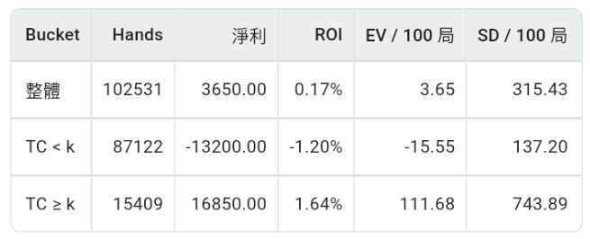

高カードの原理
高カード比率が上がると、ブラックジャック、ダブル、インシュランス、ディーラーのバースト率でプレイヤーに構造的な優位が生まれます。
- Blackjack の配当は 3:2 なので、10 と A が多いほどプレイヤーが blackjack を引く確率は上がります。
- 9、10、11 の double は高カードを引きやすく、加倍によって優位も大きくなります。
- ディーラーは 12-16 でヒットする必要があり、高カードが多いほど 10 を引いてバーストする確率が上がります。
- Insurance は本質的に次のカードが 10 かどうかに賭けるものです。10 の密度が十分高いときだけ期待値が正になり得ます。
これが Hi-Lo のようなシステムで低カードを +1、高カードを -1 とする理由です。低カードが出ると、残りカードの高カード密度が相対的に上がり、プレイヤーに有利になります。
アプリのシミュレーション統計
以下はアプリで Hi-Lo と Bet Ramp を使ってシミュレーションし、true count、ベット段階、EV、変動をグループ別に比較したものです。

Hi-Lo + Bet Ramp のシミュレーション結果
このシミュレーションは Hi-Lo カウントと Bet Ramp を使い、100,000 ラウンドを走らせ、しきい値を k = 2 に設定しています。true count が高い区間、つまり TC >= 2 に入ると、全体の期待値は TC < 2 の区間より明確に高くなります。
これは高カード比率が上がると、プレイヤーの優位がより集中して現れることを示しています。Bet Ramp の核心は、高カードが多く有利な場面でベットを上げることです。つまり、カウントの優位を活かすには、デッキが良くなったことを知るだけでなく、高 TC でベット段階を使って優位を拡大する必要があります。
ただし、高 TC 区間は EV が高い一方で標準偏差も大きくなります。高カードが多いほど有利ですが、短期の変動も激しくなるため、資金管理とリスク管理は重要です。